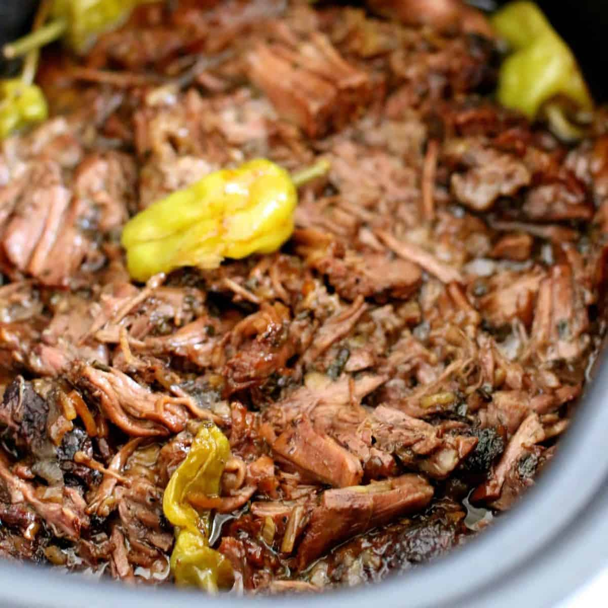

Mississippi Pot Roast
Description:
Probably the easiest, tastiest slow cooker recipe you will ever come across!
Ingredients:
- 1 - 2lb Beef Roast
- 5 - 7 Pepperoncini peppers
- 1 packet ranch dressing mix
- 1 packet a jous mix
- 1/2 stick butter
Probably the easiest, tastiest slow cooker recipe you will ever come across!